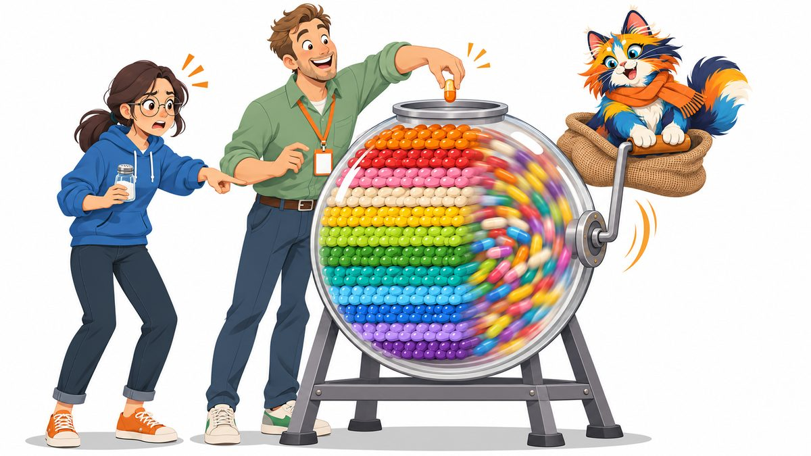

Плохо перемешали. В декабре 1969 года в США разыграли очерёдность призыва: 366 капсул с датами рождения опустили в барабан и тянули по одной. Капсулы засыпали по месяцам — январь первым, декабрь последним — и перемешали наспех. Декабрьские даты оказались сверху и в среднем получили ранние номера, около 120 при среднем 183, январские — поздние, около 200. На следующий год даты и номера тянули из двух барабанов.
Занятие 5 · блок 5
Разбиение и SRM

На занятии 4 Алиса собрала критерий и посчитала p-value, а в начале этого занятия — интервал и размер выборки. Боб запустил свой первый тест на платформе и через неделю пришёл с тремя вопросами.

Боб
Почему в тесте на 1 200 человек больше, чем в контроле? Почему CTR прокрасился, а выручка нет? И можно я остановлю тест сегодня, он же уже прокрасился?
Вся теория занятия 4 стоит на одном допущении: группы получены случайно, и других различий, кроме изменения, у них нет. Если разбиение сломалось, никакой критерий уже не спасёт — поэтому первым делом проверяют сам сплит.
Разбиение по хешу и соль
- Единица рандомизации — то, что случайно попадает в группу: обычно пользователь, а не визит и не событие.
- Разбиение: группа → тест, иначе контроль. Хеш детерминирован — пользователь всегда видит одну версию — и «перемешивает» id так, что группы похожи по всему, кроме изменения.
- Соль — строка, уникальная для эксперимента. Разные соли дают независимые разбиения. Без соли одни и те же люди всегда оказывались бы «в тесте», и все эффекты складывались бы на них.
- Слои. Эксперименты, которые могут мешать друг другу — два варианта одной кнопки, — ставят в один слой: непересекающиеся доли трафика. Независимые — в разные слои с разными солями.
Вопрос залу. Разработчик предлагает: «Не нужен хеш — отправим в тест всех, у кого id заканчивается на 0–4». Что может пойти не так?
Лотерея призыва 1969 года и цинга

Выбирал сам. В 1747 году корабельный врач Джеймс Линд разбил 12 моряков с цингой на 6 пар и дал каждой паре своё средство; поправились те, кому давали апельсины и лимоны. Но пары назначал сам Линд. Если врач — или менеджер — отдаёт новинку тем, кто «выглядит покрепче», эффект создаёт его выбор, а не новинка.
Плохой хеш — та же лотерея: «случайно» на словах, но с порядком внутри. Монетка нужна, чтобы выбирал не человек.
SRM — расхождение долей групп с планом
SRM (sample ratio mismatch) — фактические размеры групп значимо отличаются от плановых. Проверка — критерий согласия из блока 3: ожидаемые частоты — план, при 50/50 ; наблюдаемые — факт.
SRM почти всегда значит, что кто-то пропал неслучайно: тестовая версия падает у части пользователей, редирект теряет людей, фильтр ботов работает по-разному в группах. Сравнение групп смещено, и результат теста нельзя интерпретировать, пока причина не найдена.
Задача 9. 50 600 против 49 400
План — 50/50. В тесте 50 600 пользователей, в контроле 49 400. Проверь SRM критерием . Можно ли смотреть на метрики?
Арбетнот, 1710: первый p-value и первый «SRM»
Врач Джон Арбетнот выписал крещения в Лондоне за 82 года подряд: в каждом году мальчиков было больше, чем девочек. Если шансы 50 на 50, такое случается с вероятностью — и он заключил, что доля мальчиков не случайна. По сути, это первый в истории расчёт p-value.
Важно, с каким планом сравнивать. Мальчиков рождается около 51.3%, и «50/50» здесь — ошибка плана, а не открытие. В A/B план — заданный сплит, и он должен быть записан, а не угадан.
Дополнительно — если останется время
Антифрод съел лучших клиентов
SRM: в тесте пользователей на 0.8% меньше, чем в контроле; при сотнях тысяч . Результат: «B хуже контроля». Оказалось, новая версия заставляла самых активных людей вести себя как роботы, и фильтр ботов выкидывал их из теста. Что стало с выводом после починки фильтра?
SRM как температура: где искать причину
SRM — симптом, а не диагноз. В Microsoft его находят примерно в 6% экспериментов, проверяют до всех метрик и бьют тревогу при : проверок SRM очень много.
| Стадия | Что ломается | Пример |
|---|---|---|
| Назначение | кривой хеш, общий с другим тестом бакет, перенос эффекта | hash(id) % 2 и hash(id) % 4 в соседних тестах |
| Исполнение | группы стартовали в разное время, редирект или краш в одной группе | медленная версия теряет тех, кто ушёл до логирования |
| Обработка логов | антибот, дедупликация, джойны, опоздавшие логи | фильтр ботов съел самых активных в тесте |
| Анализ | триггер пишется по-разному в группах | событие «увидел витрину» логируется после загрузки |
| Вмешательство | паузу поставили одной группе, раздали ссылку на версию | промо-рассылка вела только в тест |
SRM можно проверять и последовательно, каждый час, с порогом для подглядывания: сломанный сплит лучше поймать в первый день.
Вопрос залу. Платформа переиспользует бакеты: тест получил те же бакеты, что прошлогодний тест с тяжёлым багом в тестовой группе. Перед стартом Алиса прогнала A/A по данным до эксперимента: «тест» уже отличается от «контроля», . Что случилось?
Поровну, но разных: проверка сплита классификатором
SRM видит только численность групп. А если в тест и контроль попало поровну людей, но разных? Обучим модель угадывать группу по признакам, известным до старта. Если сплит честный, модели не за что зацепиться.
Вопрос залу. Какой AUC получится на 2 000 гостей при честном сплите — ровно 0.5?
Сначала проверь сплит
Разбиение — хеш от пользователя с солью эксперимента. Первая проверка любого теста — SRM критерием : если доли групп не совпали с планом, результат смещён, пока не найдена причина.